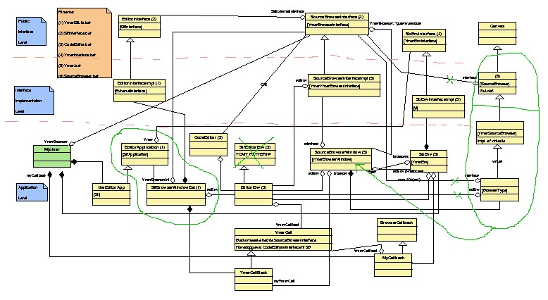

Torsdag d.25. oktober 2001, kl.14.15
Til stede: ESS,KFJ,SSH,HML,MBE,MEJ,KSJ
Referent: MEJ
Dato for næste møde: Torsdag d. 22 november 2001, kl. 14.15.

På application-niveau hedder klasserne -application eller -window;
På interface-niveau hedder de -interface;
Implemementationen af interfacet hedder -interfaceImpl.
Sif omdøbes til Editor, Ymer til SourceBrowser eller kort: 'sb'.
Sourcebrowser flyttes ind i SourceBrowserWindow, da det kun er af historiske årsager, den ligger separat i sin egen fil. SourceBrowser indeholder stort set kun gui-erklæringer, som alligevel implementeres i YmerSourceBrowser (og denne ligger allerede i SourceBrowserWindow), så de kan også kollapses til blot en enkelt klasse ved denne flytning.
SifEditorEnv, som er et tomt pattern, kan desværre ikke umiddelbart fjernes, da den tjener formålet at undgå en cykel i include-grafen.
Også navne på variable/referencer skal opdateres:
Diskussion om hvorvidt patternet 'Observer' i metaprogrammeringssystemet
bør omdøbes til 'mpsObserver', når vi pludselig også
kalder vores callback for en slags observer:
MEJ,MBE &KFJ: det er forvirrende - så kan man fejlagtigt
tro, at SbObserver har noget at gøre med (f.eks. burde arve fra)
Observer.
ESS og HML: nej, man kan godt have flere patterns, der hedder det samme,
uden at det interfererer - de er jo ikke i samme scope.
Konklusionen blev, at der ingen ændringer skal ske i navngivning
af Observer.
I stedet for klasserne YmerCall og myCallback bør dette slås sammen med YmerBrowserInterface. Problemet er bare, at YmerBrowserInterface har en pointer 'cfe' (= Current Form Editor, synonym for Current Code Editor af historiske årsager) til CodeEditor, hvorfor der vil opstå en cykel i include-grafen, hvis CodeEditor samtidig skal have en pointer til YmerBrowserInterface. Midlertidig workaround (indtil der findes et alternativ til, at YmerBrowserInterface har cfe): YmerBrowserInterface (som jo kommer til at hedde SourceBrowserInterface) arver fra AbstractSourceBrowserInterface, som er det, CodeEditor har en pointer til. Implementationen ligger stadig i SourceBrowserInterfaceImpl.
Ændringerne blev vedtaget.
KFJ fortsætter med at kigge på gui-opdateringer ved 'New Fragment'.